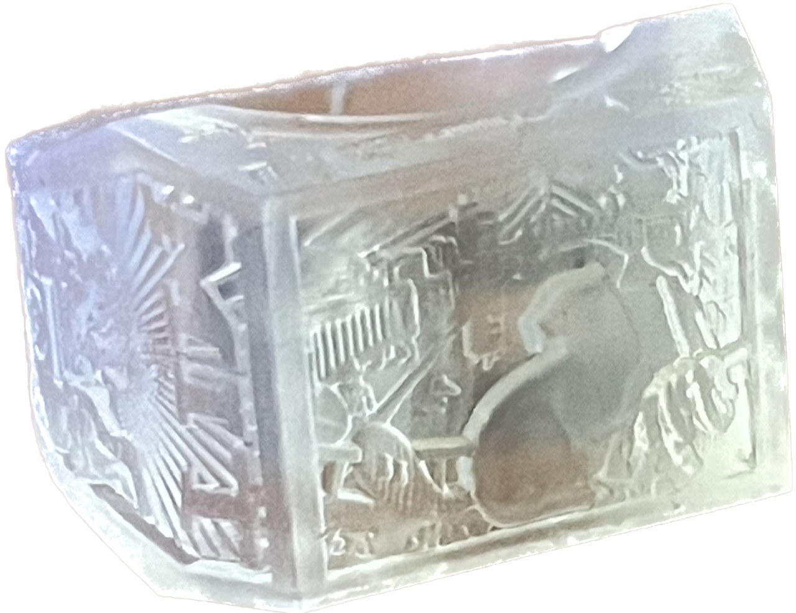
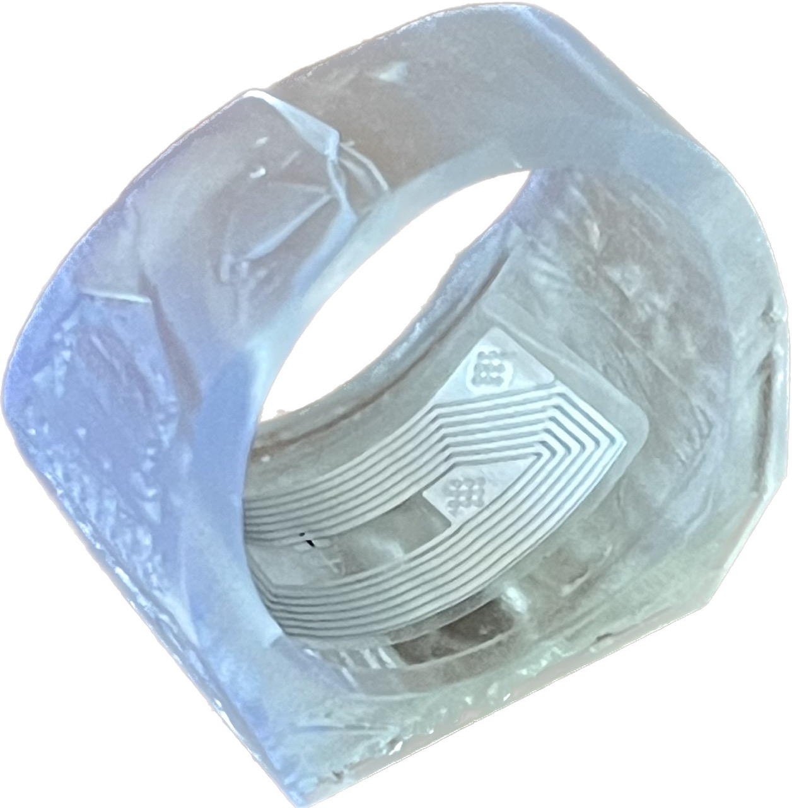
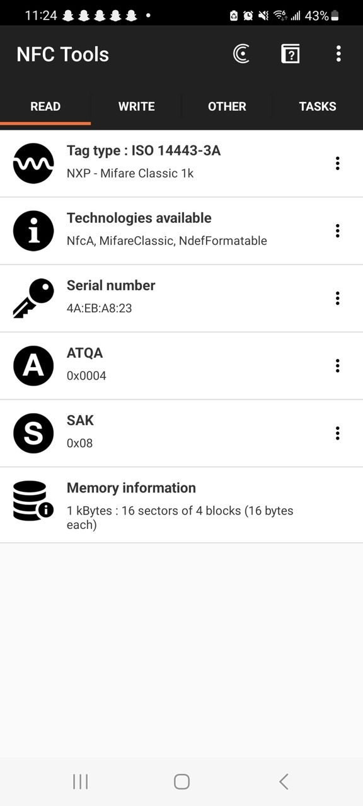
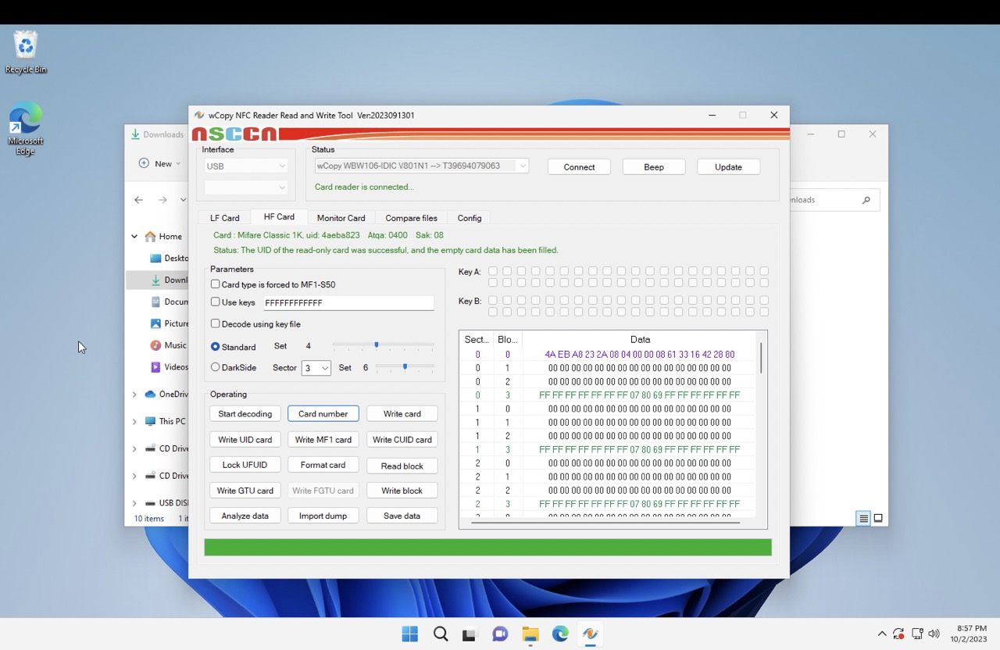
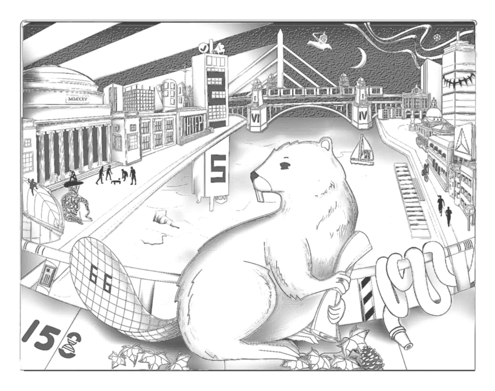
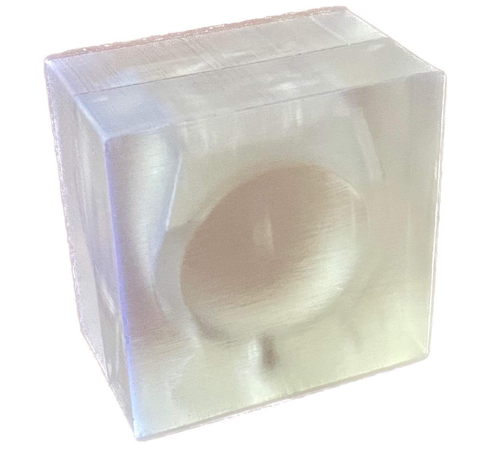
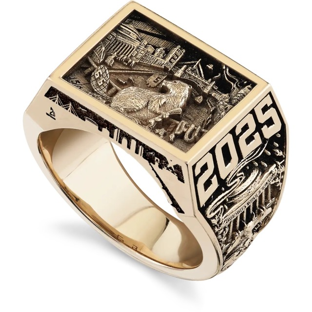

Maybe I should've made a keychain?
Maybe I should've made a keychain?(I'm still working on this project. I post updates on my blog here!)


I wear my class ring (Brass Rat) just about all the time. But as far as cool functionality goes, it's a little underwhelming (no, the hacker's map does not count). This week I'm making a replica Brass Rat that will tap into MIT campus, dorms and other cool stuff.
The idea of a ring that functions as a wireless ID card isn't new; in fact, there's plenty of commercial options out there and even an Adafruit tutorial on 3D printing your own. But it turns out that replicating an MIT student ID card isn't trivial, and I spent the first few days of this week researching and sourcing parts. Here's a rundown of the situation.
So what is RFID? Well it stands for Radio-Frequency Identification, and its subset that we actually care about is Near-Field Communication (NFC). The "tag" (e.g. student ID card) is a passive chip and antenna that will be powered by and communicate with a reader (your phone, tap-access readers, etc.). This all happens wirelessly and the electronics can get to ridiculous sizes (I mean think about how slim NFC badges are).
The issue is that these were designed to be secure and have some measures against cloning. For example, MIT student IDs use the Mifare Classic 1K which have a 4-byte unique identifier burned into the chip, permanently! So if you source these chips from the manufacturer, cloning is impossible.
 Screenshot of NFC Tools, which I used to identify the chip
So what do we do? Introducing Magic Mifare Classic 1K cards. They're basically bootleg tags that, from the perspective of an NFC reader, behave exactly like their regular counterparts. The difference is that their 4-byte "unique" identifier is changeable. It's for that same reason that they're a little rarer, and I only have a week to purchase and deliver these parts so I'll have to do some fiddling around. Here's what I ordered:
A few days later, my packages arrived and it was time to test the NFC chips. I borrowed my friend's desktop NFC reader/writer and successfully copied my school ID to the Magic MIFARE 1K Key Tags but had no luck with the smaller NTag213's.
 The NFC writer's software looks pretty sketch but hey, it works!
Now the only issue was this unfortunate form-factor:
Maybe I should've made a keychain?
So, using a pair of needle nose pliers, I obliterated dissected the key tags mentioned above. And, well, the antenna inside of it is way too big like I thought.
 The antenna are the coils of copper and the black dot is the chip itself
The antenna are the coils of copper and the black dot is the chip itself
But, since the copper is thin enough to be flexible, I was able to bend it to fit in the base of the ring. So it might look pretty bad but this ring will tap anywhere on MIT campus!
 It might not be very comfortable but the antenna isn't visible when worn
It might not be very comfortable but the antenna isn't visible when worn
This section is something I'd like to try but haven't gotten around to yet For both NFC tags (the keychain and sticker), the only relevant part is the chip. The rest is an antenna, which just has to be a coil of some conductive material. So I'd like to transfer the working NFC chip onto the antenna of sticker tag, which has the right form factor.
Ok so nerd stuff aside, I still need to replicate the brass rat. This week's assignment is 3D printing so I will be taking that route. Let's make a 3D model.
 Here's what I'm recreating
Here's what I'm recreating
The issue is I'm terrible at digital sculpting and this model would be way too intricate to make by hand (let alone in a week!). Thankfully, the people behind the ring have an entire webpage dedicated to its design, with some really high resolution images (clearly they didn't take HTMAA)!
The 3D modelling technique I will be using is called displacement mapping. Basically, a greyscale image is projected onto dense 3D geometry and its vertices are moved along their normals, proportional to the lightness of the corresponding pixel.
So I just need to convert the drawings of the Brass Rat's sides from above into greyscale displacement maps and I should be good to go! There are a few different ways to do this; below is what I tried.
 Attempt #01: This style transfer of an image using a generic depth map
Attempt #01: This style transfer of an image using a generic depth map
 Attempt #02: Using this AI depth-map generator
Attempt #02: Using this AI depth-map generator
 Attempt #03: I asked ChatGPT to write an OpenCV script
So clearly AI isn't taking our jobs just yet. The results above range from completely useless to lacking details to not understanding what a depth map is (even if there appears to be details, we don't just want contours!). So I will do it, sigh, manually in Adobe Photoshop.
Attempt #04: Well ya can't go wrong with manually coloring every detail :P
Now I needed to model the Brass Rat, minus all the details. Shout-out to Shapr3D for being an awesome CAD program, look at how satisfying this is:
Here is the final result!
It's pretty clear that the level of detail I'm seeking is near-impossible on any FDM printer (the type of 3D printers that deposit melted plastic one layer at a time). In fact, I didn't even try because the slicer software for the Prusa i3 Mk3 gave me some less than desirable previews.
 The poor beaver getting massacred by very thick lines of PLA filament
The poor beaver getting massacred by very thick lines of PLA filament
Instead I opted for the awesome FormLabs Form 3+, a stereolithography (SLA) 3D printer. Both FDM and SLA work one layer at a time, but the latter has much better resolution and surface finish.
 Here are the rings in Formlabs' "slicer-software-equivalent"
Here are the rings in Formlabs' "slicer-software-equivalent"
For any MIT students who are interested, I made these prints at The Deep. From my minimal research, they have the best resin prices on campus (each ring cost me around half a dollar).
Planned for the future
For this project, I'd like the final version to be made of real metal. The EECS lab section apparently has some roto281, which is an alloy with a really low melting point (well, 281º F). Using roto281 would have saved me a trip to the foundry.
Planned for the future
This process deposits a very thin layer of metal onto a conducting surface. So, cheap roto281 turned to gold (-ish) ü§ë. Another option is spray painting the resin ring with conductive paint but none of the labs I reached out to had the resources to help me (and getting them myself is way out of budget).
Planned for the future
So it turns out that Formlabs sells Castable Wax, which make the perfect investment for lost-wax casting. The process involves making a negative mold by (literally) burning away the positive part (which is made of wax). Then, any metal (even hotter than roto281 provided the right tools) can be poured in and casted. I printed using this and it turned out just as good as the clear resin but melting this would've required temperatures way hotter than what EDS can do.
As a last ditch attempt, I decided to print the negative mold directly out of resin, and pour the metal in that. It was made pretty quickly though (for this entire project, I am wrestling between lab open hours and printing time; it is logistical hell) and everything that could go wrong, went wrong.
 To separate mold from cast, you'll probably need to break something. This should've been a three part mold!
To separate mold from cast, you'll probably need to break something. This should've been a three part mold!
 I somehow messed up my UVs and printed the bezel in portrait orientation ü§¶üèΩ‚Äç‚ôÇÔ∏è
I somehow messed up my UVs and printed the bezel in portrait orientation ü§¶üèΩ‚Äç‚ôÇÔ∏è
 And perhaps the biggest fail: I checked the datasheet after the print, this resin would've burnt if I used it to cast
So, lots of logistical failures this week but I technically accomplished what I set out to make: a brass rat that can tap into buildings. Here's the final demo:
| Cost | Can tap into buildings? | |
|---|---|---|
 |
$0.97 | ✔ |
|  | $208 - $1857 | ✖ |
So, in conclusion: meh, I'll improve upon this during molding & casting week.